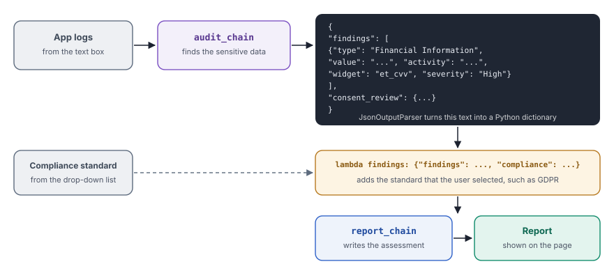

A sequential chain passes structured data from one step to the next, so that each step does one clear job with exact fields.
What you will learn
- Why structured data, such as JSON, is a better input for the next step than free text
- How
JsonOutputParserturns the answer of a model into a Python dictionary - How to add a value from the user between two chains
- Why a local model is a good choice for data that contains personal information
Read chapter 6 first. This chapter builds on the two joined chains from there.
The idea
In chapter 6, the first chain returned free text, and the second chain had to read it. Free text is easy for a person to read, but hard for a program to use. A program cannot easily find "the severity of the third finding" in a paragraph.
Structured data solves this problem. If the first chain returns JSON, each finding gets the same named fields, such as type, value and severity. An output parser turns the JSON text into a Python dictionary, so that your code and the next chain can use each field directly.
The second step often needs more than the output of the first step. In this chapter, it also needs the standard that the user selected, such as GDPR. A small function between the two chains adds that value, so that the second chain receives both.
An auditor first fills in a fixed checklist for each finding, with the same columns every time. A manager then reads the checklist and writes a report for the regulation that the client named. The checklist makes the work of the manager faster and more exact than a long letter.

What you will build
You will build a page that checks app logs for privacy problems. The user pastes logs that record what was typed into an app, and selects a compliance standard. The first chain lists the sensitive data in the logs as JSON. The second chain writes a privacy assessment report for the selected standard.
The same pattern works for other reviews, such as checking a contract against a policy. The first step extracts facts in a fixed form, and the second step judges them.
![Chain 1, audit_chain = audit_prompt | llm | JsonOutputParser(), Finds the sensitive data in the logs and returns a dictionary. Chain 2, report_chain = report_prompt | llm, Two slots, {findings} and {compliance}. Join, audit_chain | (lambda findings {...}) | report_chain, The lambda adds the selected standard to the findings. Form, st.text_area and st.selectbox, The logs and one of GDPR, DPDP, HIPAA or PCI DSS. Call, compliance_check_chain.invoke({"logs" logs}), Runs after a click on Analyze. Page, st.write(response.content), The Privacy Assessment Report.](../../assets/img/diagrams/lc-07-flow.svg)
Build it step by step
Step 1Create the file
In the code folder, create the folder 07_sequential_chain and in it the file app_ollama.py.
Step 2Import the libraries and load the model
from langchain_ollama.chat_models import ChatOllama
from langchain_core.prompts import PromptTemplate
from langchain_core.output_parsers import JsonOutputParser
from langchain_core.globals import set_debug
import streamlit as st
set_debug(True)
llm = ChatOllama(model="gemma:2b")JsonOutputParseris new. It reads the answer of the model as JSON and returns a Python dictionary or list.set_debug(True)prints each step to the terminal, as in chapter 6. Here, it lets you see the JSON from the first chain.
Step 3Write the template that finds the data
audit_prompt = PromptTemplate(
input_variables=["logs"],
template="""
You are an Android Privacy Auditor.
Analyze the following Android Input Monitoring logs.
Your responsibility is ONLY to identify privacy related findings.
Review the logs and identify:
1. Personal Information
2. Financial Information
3. Authentication Secrets
4. Device/User Identifiers
5. User Generated Content
6. Consent & Privacy Events
For every finding extract:
- type
- value
- activity
- widget
- severity
For Consent Review determine:
- Was a consent dialog available?
- Which consent dialogs were shown?
- Was a Privacy Policy shown?
- Were Terms of Service shown?
- Was the consent viewed?
- Was consent accepted?
- Was consent declined?
Return ONLY valid JSON.
Logs:
{logs}
"""
)- The six numbered categories tell the model which kinds of data to look for, such as financial information and authentication secrets.
- The five fields under "For every finding extract" give each finding the same form. The second chain can then compare the findings easily.
- "Return ONLY valid JSON." is important, because
JsonOutputParserfails if the answer contains anything else, such as an introduction in words.
Step 4Write the template for the report
report_prompt = PromptTemplate(
input_variables=["findings", "compliance"],
template="""
You are a Privacy Compliance Officer.
The following privacy findings were extracted from Android application logs.
Compliance Standard:
{compliance}
Privacy Findings:
{findings}
Generate a concise Privacy Assessment Report.
Include:
1. Executive Summary
2. Overall Risk
3. Sensitive Information Summary
4. Exposed Sensitive Information (values)
5. Consent Review
6. Release Recommendation
7. Developer Recommendations
"""
)- The template has two slots,
{compliance}for the standard and{findings}for the result of the first chain. - The seven numbered sections fix the structure of the report. Section 4 asks for the exposed values, so that a reader sees exactly which data leaked.
Step 5Build the chains
audit_chain = audit_prompt | llm | JsonOutputParser()
report_chain = report_prompt | llm
compliance_check_chain = (
audit_chain
| (lambda findings: {"findings": findings, "compliance": compliance})
| report_chain
)audit_chainends withJsonOutputParser(), so it returns a dictionary and not text.lambda findings: {...}is a small function without a name. It takes the dictionary and returns a new dictionary with two keys, one for each slot of the second template.- The pipe symbol turns the lambda into a step of the chain, so that it runs between the two chains.
- The lambda uses
compliance, a variable that the page creates later in the script. This works, because the lambda reads the variable only when the chain runs, after the user clicks Analyze.
Step 6Build the page
st.set_page_config(page_title="Android Privacy Auditor")
st.title("Android App Privacy Compliance Check")
st.info(
"""
This application analyzes logs to identify privacy related findings
such as:
- Personal Information (PII)
- Financial Information
- Authentication Secrets
- Device Identifiers
- User Generated Content
- Consent & Privacy Events
The extracted findings are then reviewed against the selected
compliance standard to generate a Privacy Assessment Report.
"""
)
logs = st.text_area(
label="Add logs here",
height=300,
placeholder="""
Sample Logs:
07-01 10:15:25 INPUT_MONITOR_EDITTEXT window=FormLogin view=email text=[john.doe@gmail.com]
07-01 10:15:31 INPUT_MONITOR_EDITTEXT window=FormLogin view=password text=[MyPassword123]
"""
)
compliance = st.selectbox(
"Compliance Standard",
[
"GDPR",
"DPDP",
"HIPAA",
"PCI DSS",
],
)
analyze_button = st.button(label="Analyze", use_container_width=True)st.titleandst.infoshow a heading and a blue box that explains what the app does.st.text_areais the box for the logs, with a short example as placeholder.st.selectboxlists four standards. Withoutindex=None, the first choice, GDPR, is selected at the start, so the value is never empty.use_container_width=Truemakes the button as wide as the page.
Step 7Run the chain and show the report
if analyze_button:
if logs.strip():
with st.spinner(text="Analyzing Android logs..."):
response = compliance_check_chain.invoke({"logs":logs})
st.success("Analysis completed successfully.")
st.subheader("Privacy Assessment Report")
st.write(response.content)
else:
st.warning("Please enter the logs to continue...")compliance_check_chain.invoke({"logs": logs})runs all three steps with one call.st.successshows a green message, so that the user knows that the analysis finished.- The end of the file adds an expander with sample logs, made with
st.expanderandst.code. The user can copy them into the box to test the app. The full code below shows them.
Run it
Make sure that Ollama runs and that the langchain environment is active. Then start the app from the root folder of the project.
streamlit run code/07_sequential_chain/app_ollama.pyStreamlit will start a small web server and print its address.
You can now view your Streamlit app in your browser.
Local URL: http://localhost:8501
Network URL: http://192.168.1.20:8501Open the Local URL in your browser. Open "View Sample Logs" at the bottom, copy the logs into the box and select GDPR. Then click Analyze. The two chains run one after the other, so the report can take a while.

A language model does not always give the same answer. Your report can list other findings. Its seven sections will be the same, because the second template asks for them.
Look closely
The report says that the logs contain no financial information and lists "None" for every category. This is wrong. The sample logs contain a card number, an expiry date, a CVV and the name on the card, all typed on a payment screen.
The mistake starts in the first chain. The model returned valid JSON, so the parser did not fail, but the JSON missed the findings. The second chain then wrote a calm report from an empty list. The debug output in the terminal shows the JSON of the first chain, so that you can see where the findings got lost.
Two changes usually help. Give the template an example of the exact JSON that you expect, and use a larger model for the extraction step. Valid JSON only proves the form of the answer, not that its content is correct.
Full code of chapter 7code/07_sequential_chain/app_ollama.pyView on GitHub
from langchain_ollama.chat_models import ChatOllama
from langchain_core.prompts import PromptTemplate
from langchain_core.output_parsers import JsonOutputParser
from langchain_core.globals import set_debug
import streamlit as st
# ----------------------------------------------------------
# Enable LCEL Debug Logs
# ----------------------------------------------------------
set_debug(True)
# ----------------------------------------------------------
# Loading Ollama Model
# ----------------------------------------------------------
llm = ChatOllama(model="gemma:2b")
# ----------------------------------------------------------
# Prompt 1
# Extract structured privacy findings from Android logs
# ----------------------------------------------------------
audit_prompt = PromptTemplate(
input_variables=["logs"],
template="""
You are an Android Privacy Auditor.
Analyze the following Android Input Monitoring logs.
Your responsibility is ONLY to identify privacy related findings.
Review the logs and identify:
1. Personal Information
2. Financial Information
3. Authentication Secrets
4. Device/User Identifiers
5. User Generated Content
6. Consent & Privacy Events
For every finding extract:
- type
- value
- activity
- widget
- severity
For Consent Review determine:
- Was a consent dialog available?
- Which consent dialogs were shown?
- Was a Privacy Policy shown?
- Were Terms of Service shown?
- Was the consent viewed?
- Was consent accepted?
- Was consent declined?
Return ONLY valid JSON.
Logs:
{logs}
"""
)
# ----------------------------------------------------------
# Prompt 2
# Generate a privacy assessment report using the extracted
# findings from prompt 1 and selected compliance standard
# ----------------------------------------------------------
report_prompt = PromptTemplate(
input_variables=["findings", "compliance"],
template="""
You are a Privacy Compliance Officer.
The following privacy findings were extracted from Android application logs.
Compliance Standard:
{compliance}
Privacy Findings:
{findings}
Generate a concise Privacy Assessment Report.
Include:
1. Executive Summary
2. Overall Risk
3. Sensitive Information Summary
4. Exposed Sensitive Information (values)
5. Consent Review
6. Release Recommendation
7. Developer Recommendations
"""
)
# ----------------------------------------------------------
# LCEL Chains
# ----------------------------------------------------------
audit_chain = audit_prompt | llm | JsonOutputParser()
report_chain = report_prompt | llm
compliance_check_chain = (
audit_chain
| (lambda findings: {"findings": findings, "compliance": compliance})
| report_chain
)
# ----------------------------------------------------------
# Building Streamlit UI
# ----------------------------------------------------------
st.set_page_config(page_title="Android Privacy Auditor")
st.title("Android App Privacy Compliance Check")
st.info(
"""
This application analyzes logs to identify privacy related findings
such as:
- Personal Information (PII)
- Financial Information
- Authentication Secrets
- Device Identifiers
- User Generated Content
- Consent & Privacy Events
The extracted findings are then reviewed against the selected
compliance standard to generate a Privacy Assessment Report.
"""
)
logs = st.text_area(
label="Add logs here",
height=300,
placeholder="""
Sample Logs:
07-01 10:15:25 INPUT_MONITOR_EDITTEXT window=FormLogin view=email text=[john.doe@gmail.com]
07-01 10:15:31 INPUT_MONITOR_EDITTEXT window=FormLogin view=password text=[MyPassword123]
"""
)
compliance = st.selectbox(
"Compliance Standard",
[
"GDPR",
"DPDP",
"HIPAA",
"PCI DSS",
],
)
analyze_button = st.button(label="Analyze", use_container_width=True)
# ----------------------------------------------------------
# Generating Response
# ----------------------------------------------------------
if analyze_button:
if logs.strip():
with st.spinner(text="Analyzing Android logs..."):
response = compliance_check_chain.invoke({"logs":logs})
st.success("Analysis completed successfully.")
st.subheader("Privacy Assessment Report")
st.write(response.content)
else:
st.warning("Please enter the logs to continue...")
with st.expander("View Sample Logs (Copy and paste into the logs input box to test)"):
st.code(
"""
06-30 14:07:52.982 9398 9398 D INPUT_MONITOR_CLICK: pkg=com.material.components | window=com.material.components/code.ActivityMainMenu | widget=android.widget.LinearLayout | id=? | text=Dialogs | desc=<none>
06-30 14:07:57.586 9398 9398 D INPUT_MONITOR_CLICK: pkg=com.material.components | window=com.material.components/code.ActivityMainMenu | widget=android.widget.LinearLayout | id=? | text=Term of Services | desc=<none>
06-30 14:08:06.899 9398 9398 D INPUT_MONITOR_CLICK: pkg=com.material.components | window=com.material.components/com.screens.activity.dialog.DialogTermOfServices | widget=androidx.appcompat.widget.AppCompatButton | id=bt_accept | text=Accept | desc=<none>
06-30 14:08:17.064 9398 9398 D INPUT_MONITOR_CLICK: pkg=com.material.components | window=com.material.components/code.ActivityMainMenu | widget=android.widget.LinearLayout | id=? | text=GDPR Basic | desc=<none>
06-30 14:08:22.403 9398 9398 D INPUT_MONITOR_CLICK: pkg=com.material.components | window=com.material.components/com.screens.activity.dialog.DialogGDPRBasic | widget=androidx.appcompat.widget.AppCompatTextView | id=tv_content | text=By using this App, you agree to the Terms-Conditions, Cookies-Policy and Privacy-Policy and consent to having your personal data transferred and processed outside EU. | desc=<none>
06-30 14:08:29.298 9398 9398 D INPUT_MONITOR_CLICK: pkg=com.material.components | window=com.material.components/com.screens.activity.dialog.DialogGDPRBasic | widget=androidx.appcompat.widget.AppCompatButton | id=bt_accept | text=ACCEPT | desc=<none>
06-30 14:08:58.886 9398 9398 D INPUT_MONITOR_EDITTEXT: pkg=com.material.components | window=com.material.components/com.screens.activity.form.FormLogin | view=email | hint=Email | inputType=TEXT/EMAIL_ADDRESS | text=[abhi@email.com]
06-30 14:09:16.488 9398 9398 D INPUT_MONITOR_EDITTEXT: pkg=com.material.components | window=com.material.components/com.screens.activity.form.FormLogin | view=password | hint=Password | inputType=TEXT/PASSWORD | text=[Abcd1234]
06-30 14:09:19.280 9398 9398 D INPUT_MONITOR_COMPOUND_BUTTON: pkg=com.material.components | window=com.material.components/com.screens.activity.form.FormLogin | widget=AppCompatCheckBox | label=Remember me | old_state=UNCHECKED | new_state=CHECKED
06-30 14:09:21.553 9398 9398 D INPUT_MONITOR_CLICK: pkg=com.material.components | window=com.material.components/com.screens.activity.form.FormLogin | widget=androidx.appcompat.widget.AppCompatButton | id=email_sign_in_button | text=LOGIN
06-30 14:09:55.124 9398 9398 D INPUT_MONITOR_EDITTEXT: pkg=com.material.components | window=com.material.components/com.screens.activity.chat.ChatWhatsapp | view=text_content | hint=Write a message... | inputType=TEXT/NORMAL | text=[hello]
06-30 14:10:05.452 9398 9398 D INPUT_MONITOR_CLICK: pkg=com.material.components | window=com.material.components/com.screens.activity.chat.ChatWhatsapp | widget=FloatingActionButton | id=btn_send | text=<none>
06-30 14:10:17.325 9398 9398 D INPUT_MONITOR_EDITTEXT: pkg=com.material.components | window=com.material.components/com.screens.activity.chat.ChatWhatsapp | view=text_content | hint=Write a message... | inputType=TEXT/NORMAL | text=[how are you]
06-30 14:10:19.046 9398 9398 D INPUT_MONITOR_CLICK: pkg=com.material.components | window=com.material.components/com.screens.activity.chat.ChatWhatsapp | widget=FloatingActionButton | id=btn_send | text=<none>
06-30 14:10:40.509 9398 9398 D INPUT_MONITOR_EDITTEXT: pkg=com.material.components | window=com.material.components/com.screens.activity.chat.ChatWhatsapp | view=text_content | hint=Write a message... | inputType=TEXT/NORMAL | text=[I'm good]
06-30 14:10:42.714 9398 9398 D INPUT_MONITOR_CLICK: pkg=com.material.components | window=com.material.components/com.screens.activity.chat.ChatWhatsapp | widget=FloatingActionButton | id=btn_send | text=<none>
06-30 14:10:57.600 9398 9398 D INPUT_MONITOR_EDITTEXT: pkg=com.material.components | window=com.material.components/com.screens.activity.payment.PaymentCardDetails | view=et_card_number | hint=Credit Card Number | inputType=NUMBER | text=[123456789874]
06-30 14:11:04.975 9398 9398 D INPUT_MONITOR_EDITTEXT: pkg=com.material.components | window=com.material.components/com.screens.activity.payment.PaymentCardDetails | view=et_expire | hint=MMYY | inputType=NUMBER | text=[0866]
06-30 14:11:08.953 9398 9398 D INPUT_MONITOR_EDITTEXT: pkg=com.material.components | window=com.material.components/com.screens.activity.payment.PaymentCardDetails | view=et_cvv | hint=CVV | inputType=NUMBER | text=[302]
06-30 14:11:22.104 9398 9398 D INPUT_MONITOR_EDITTEXT: pkg=com.material.components | window=com.material.components/com.screens.activity.payment.PaymentCardDetails | view=et_name | hint=Name on Card | inputType=TEXT | text=[testName]
06-30 14:11:24.655 9398 9398 D INPUT_MONITOR_CLICK: pkg=com.material.components | window=com.material.components/com.screens.activity.payment.PaymentCardDetails | widget=androidx.appcompat.widget.AppCompatButton | id=btn_continue | text=CONTINUE
""",
language="text",
)Logs like these contain real personal data, such as card numbers and passwords. A local model keeps that data on your computer, and that is the main reason why this app uses Ollama. With a cloud model, every log line goes to the provider. The debug mode also prints the logs and the findings in the terminal, so turn it off when the app handles real data. Finally, a report that says "no sensitive data" is not proof. Check the findings yourself before you approve a release.
Check yourself
Why does the first chain return JSON and not free text?
JSON gives each finding the same named fields, so that the next step can use them directly.
What does the lambda between the two chains do?
It takes the findings and adds the selected standard, so that the second chain receives a value for each of its two slots.
The parser did not fail, but the report is wrong. How is that possible?
The model returned valid JSON with missing findings. Valid JSON only proves the form, not the content.
Key terms at a glance
| Term | Meaning |
|---|---|
| Structured data | Data with named fields in a fixed form, such as JSON, so that a program can use each field |
| JSON | A text format for structured data with keys and values |
JsonOutputParser | An output parser that turns JSON text from the model into a Python dictionary or list |
| Lambda | A small function without a name, used here as a step between two chains |
| Sequential chain | Chains that run one after the other, each with the output of the one before |
| Compliance standard | A set of rules that an app must follow, such as GDPR or the DPDP Act |
For more on structured output, see AI Engineering chapter 7.
Next
Each app so far forgot everything after one answer. In chapter 8, you will give your app a chat history, so that it can answer follow-up questions.